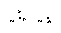
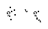

I first saw the versitility of the B-heptomino when I discovered the curious period 54 twin bees oscillator back in 1973, by putting eaters around a twin bees oscillator and moving them back. If the eaters are moved one space in, no oscillator; one more and a twin bees. Curious object indeed.
At almost the same time in 1973, Mark Niemiec was investigating appearance of known common forms (B, R, Lom, Pi, etc) within the histories of these same objects. He showed me a listing of the most promising observation: a B-heptomino run to 70 generations (quite a feat in those days!), where he had highlighted the evolution of a new B-heptomino at generation 64, turned 90 degrees. And since the B-heptomino releases a natural glider in generation 41, period 64, 128, and 256 guns appeared to be an absolute certainty as soon as someone tamed the pesky debris behind this new B! But most work in those days was done manually (gasp!) and this was not a manual job. Besides, in hindsight, there are more pitfalls than we could have imagined.
During this time, I had started a systematic construction of all terminal objects less than 15 bits and was still investigating small oscillator construction, so there was little time for other problems. I had not yet imagined the B-tracks that form the basis of later work, but thought that objects could be sheparded through an possible assortment of transformations (R->B, B->LOM, LOM->Pi, etc. returning eventually to the original object and position). Adding additional track pieces, like building a model railway set, would produce different periods. Although I casually collected interesting transformations over the next 15 years, there were many more projects to be pursued (Life and otherwise). Besides, we (Mark Niemiec and myself) hit university and had access to a mainframe (real computing power) and could start doing REAL LIFE!
(Skipping ahead to 1987:)
Although I have been programming forever (or maybe it just seems that way), I didn't get my own machine until 1987 and, of course, promptly wrote a life programme and started to enter as much of the manual work gathered through the years as I still had. Additionally, I had started to work on new stuff in earnest for the first time in years.
One of the first things I set about to create was a glider gun, since I had not yet found one. After some experimentation, I found a collision of a honeyfarm predicessor and a glider, which in 105 generations produces the honeyfarm predicessor, a glider, and a B-heptomino. It appeared that a gun should be simple to construct: just reflect the initial glider to move engine, and get the glider the B-heptomino creates at generation 41. The whole construction would be P210 (a multiple of 30), and reflecting P30n glider streams is easy.
(Reality strikes:)
The first glider produced from the honeyfarm collisions is in the wrong phase and is released too close to the engine; we're doing well so far. OK, so we must get 2 gliders from the B, but how to do it?
(Leap of Faith:)
Even though the B-heptomino does produce 2 gliders with a small amount of residual debris, it appeared that this history was too difficult to modify successfully, and required more time than the mechanism could spare. Consequently, I decided to place a block in the path of the B-heptomino in the hopes that a modifiable object might be produced, from which could be coaxed gliders and then either put the block back, or more likely, allow the eatering or sparking of the debris to recreate it. No more than a couple dozen sites yielded the necessary reaction, which I think of as a catalyst; Gosper called it "the transparent debris effect."
B-heptomino catalyst. Creates new debris, reforms block
1988 Dave Buckingham
This reaction generates some non-specific, but prolific, debris and the original block, which can be sparked (and later, eatered) to cleanly generate 2 gliders to produce an interesting, but unsatisfying, period 210 gun.
Very unpleasant, but working, period 210 gun
Finished 1988, Dave Buckingham
Additional work eventually yielded a way to turn this catalyzed debris into two gliders without the need for the pentadecathlon.
In a phone conversion with Gosper at the time, I was informed that he considerd period 210 as an unworthy gun period, since it wasa multiple of period 30 (to be fair though, he did recant this opionion when the gun was sent in the mail). OK, return to the original concept of racing B-heptominos in fixed tracks.
(Slight Hyperlink aside:)
Bob Wainwright's cute period 72 R-pentomino shuttle arrived by Snail Mail courtesy of Hickerson in July 1990. So, I checked out the glider collisions into its debris. One of these yields a B-heptomino, and even removes the nusance block. Combining this result with the transparent-debris reaction yields an interesting set of gun periods (P144+72n), which someone called "Gunstars."
P144 Gunstar based on P72 oscillator discovered by Bob Wainwright
1990 Dave Buckingham
P1152 Gunstar by Dave Buckingham
1990
Given the Gunstar results, it seemed reasonable that the transparent block reaction might yield other interesting results, but other than several ways of transforming a B into 1->3 gliders, only one truely interesting result allowed the building of a mod 8 based period 856 gun.
P856 B-heptomino gun by Dave Buckingham
using transparent block effect, 1991

(End of Hyperlink:)
Most of the old notes regarding object transformations and other interesting events have been long lost, or perhaps just misplaced, but that's academic; I don't believe anything of any real value was recorded anyhow. Resurrecting Niemiec's old listing of the B-heptomino reproducing itself at generation 64, I set about to create the period 64 gun to start.
I needed a spark source and since most of the neat spark toys that exist now had yet to fall out the search programmes, only period 8 (and subperiods) was practical (Figure-8, Kok's Galaxy, Emulators, Mold, Mazing).
With these tools, the new B-heptomino was quickly isolated, but the new (and unanticipated challenge was to remove the block created by the B-heptomino at generation 15. Adding to this distress, the new B-heptomino makes such a sharp turn that removal of debris block from the previous B-heptomino at generation 57 becomes a problem. Ok, the debris removal process would need to remove the two blocks and the residual debris from the turn reaction.
After a few weeks work, the reaction is found, the P64 gun constructed and lo and behold, the glider produced by each B at generation 41 smashes into one of the Galaxys used. Sheesh, I forgot that the glider passes back through the mechanism! No problem, we'll just find another way to turn a B-heptomino and use these two in combination. More work and the elegant sparking of a B-heptomino to produce the P73 glide symmetry turn; debris dies cleanly, while removing the generation 15 block, and the glider produced by the B removes the block from the previous B. This time we'll test a quarter of the mechanism before building the whole thing. Now the glider just nicks the figure-8 for the P73 turn. Even more work, a P64 turn that removes the debris, both blocks, and the glider. Build it, P584 Swiss Cross. But wouldn't you know it, the thing is barren; the whole exercise is moot!
(A few months pass:)
I've got the Swiss Cross and it is extensible, so how can I coax a glider out of it? Rubbing them together seems a futile exercise, and a few months of examples seem to bear this out. The P73 turn does expose some isolated debris; perhaps it can be sparked. Finally, effort is rewarded and thankfully very little effort is required to produce the much anticipated glider using Wainwright's P8 Blocker, while the function of the P73 turn is not impared.
P712 B-heptomino gun, Dave Buckingham 1991
B-heptominos could be lined up in the track and be compressed to 136 generations, so this configuration represented glider guns of periods 136+8n! For the next while, I busied myself assembling a set of alternate B-heptomino stages (P65, etc) on a P8 base. Then it was mailed to the Life group.
A P6 variant of the B track (B-train?) proved relatively easy to construct, but since there didn't (and still doesn't really) exist a P6 domino sparker, this period was also sterile. With the search work done to this point by Hickerson, periods 3, 4, and 5 were also realizable, but since they would also be sterile, there was no sense in persuing them. I had constructed a number of different period stages for the period 6 work, but none of them solved the fertility problem.
(Problem Explanation:)
Each of the known mechanisms each suffered from the same problem; the new B produced by each was either at the reaction site or slightly upwind from it. Consequently, the glider produced by the receding B would be aimed at one of the reaction sparkers or eaters. Since the generation 15 block of the B had to be removed by the debris cleanup, the new formed B could not likely be too far from the debris it left.
(End of Problem Explanation:)
In late 1993, the solution suddenly became obvious (although not solved, of course). If the escaping B (responsible for the P73 turn) were removed from the developing B, then perhaps the remaining R-pentomino could be tamed producing a new B considerably downwind of the reaction site. This new B could release it's glider freely producing a glider gun. The first P6 implementation of this is shown below.
P366 B-heptomino gun, Dave Buckingham 1994 on a period 6 base
Variations on this theme for P4 and P5 were fairly easily checked for suitability, but the actual guns were not built until the summer of 1995. Rich Schroeppel was attending a conference at the University of Waterloo, and had arranged to come to visit. The guns were hastily built along with a barren P3-based construction (to demonstrate the feasability of such a period) for his visit.
To this point P150+3n, P152+4n, P150+5n, P150+6n, and P136+8n were all now constructable and produced gliders except for the P3 variants.
(Reality's Cutting Edge:)
Not a bad result to this point, but two issues surfaced at this point: 1) unless search programmes or other heuristics became significantly better in the near future, larger sparker periods were unlikely, and 2) these new periods do nothing to advance the production of oscillators of interesting periods (prime!).
Attempts to produce period-independent track pieces (bounded only by still lifes) had failed over the previous 23 years to yield much of anything useful. Suddenly (clouds open, sun shines, angels sing) a fluke placement of a block (and subsequent stabilizing blocks), produces the period 64 B-heptomino turn dreamt of in 1973 (as classy and elegant as it was supposed to be). This was the first period independent B-heptomino turn and yielded the P256 gun (as shown), but since the released gliders pass through the mechanism, this is the only period glider gun possible (with a Figure 8, the gliders can be removed, and 4 B's cycled, but defeats the purpose). Ergo, still no period 64 gun!
P256 B-heptomino gun using period independent glider turn
Sept 26, 1995, Dave Buckingham
In a conversation with Niemiec at the time, I mentioned that I had three long playing B-heptomino reactions, which could eventually (probably a long eventually), be engineered to remove the oscillators they minimally required. They each run sufficiently long, that the choices for stable intervention are quite high. It was difficult to imagine that one of these reactions would not someday fill the void. (I had imagined that a period-independent gun would probably be a minimum period 400->500 with these reactions.)
Glide-symmetry B-heptomino turn in 134 generations,
Debris cleared after 632 generations
Curiously removes the initial block created by the B-heptomino
Nov 15, 1992 Dave Buckingham
B-heptomino translated/flipped in 156 generations,
Debris cleared after 325 generations
Nov 3, 1993 Dave Buckingham
B-heptomino turned 90 degrees in 213 generations, R-hexomino @186
Debris cleared after 263 generations
Oct 31, 1993 Dave Buckingham
But before much time could be wasted on these options, fate smiled once more. Once again, I placed a block randomly near the transient B-heptomino generated during the B history at generation 64. This block turned the B-heptomino into an R-pentomino, leaving the rest of the debris untouched.
(Technical Aside:)
In my experience, R-pentominos have had little use in the marketplace except as transient objects on the way to producing B-heptominos. Several methods of taming the R-pentomino into a B (Herschel) with small transient using stable objects have long been known. A common example is that used in the P500 gun sent to the life group. I will discuss these methods later.
(End of Technical Aside:)
Without attempting any other solution, I placed a snake to reduce the R-pentomino to B-heptomino and block. When the dust settled, and astonished disbelief faded, the block was in exactly the same position as it had started and a clean B-heptomino (Herschel) had been translated forward in 39 generations. Interestingly, the snake could not have been placed in the original context!
Translate a B-heptomino 13 spaces (and flip)
Removing the transient block in 39 generations
Other loose, but necessary, cells removed for clarity
Resulting B in x's
Jul 5, 1996 Dave Buckingham
With this new mechanism, there is no longer a necessity to do copious debris cleanup, or to remove the transient B-heptomino block. Modifying a B-heptomino, in a period-independent way, to produce a new B-heptomino instead of a Herschel finally reduces the task to something civilized. The first new result was immediate. The same B-heptomino phase used in the P73 glide-symmetry turn could be modified to produce a P112 90-degree turn (the R->Herschel conduit flips the B-heptomino). Using the mechanism, a small period period 112 emerges!
Rotate a B-heptomino 90 degrees
Removing the transient block in 112 generations
Jul 5, 1996 Dave Buckingham
Period 112 glider gun (produces 4 gliders every 112 generations)
Jul 5, 1996 Dave Buckingham
With the period 64 mechanism, larger guns can be built, but the minimum compression is 153 generations. (I use the term "compression" to designate the spacing, in generations, between the B-heptominos, and "delay", to specify the period between the B-heptomino beginning and end the stage.)
Without additional modification, any stage involving a B-heptomino that evolves long enough to allow its first glider to escape cannot be compressed to less than 69 generations. If an eater is used to remove this glider, the compression drops to 63, and if an eater2 is used, the compression tops out at 61 generations. This fact raises a very appealing point: with one or more additional mechanisms, oscillators of periods 61+n could be built!
To make a much too long story a little shorter, I poured back over the terrain already harvested with sparkers and generated a total of 8 useful B-heptomino stages, summarized below.
Delay Type Max Compression Glider @ ----- ---- --------------- -------- 64 90 degree 153 (also 73, 74, 77)** ***** 77 translate/flip 61 69 112 90 degree 61 69 117 translate 63 69** 119 translate/flip 231 231****** 156 90 degree 62 62, 69**** *158 translate/flip 176 (also 101, 102, 109, 111, 159)** No 190 90 degree 107 *****Curiously, the period 64, 77, 119, and 158 stages do not use the B-heptomino conduit that initially seemed vital to period independence. The period 77 and 119 mechanisms especially, work the way I had imaged most likely 20-odd years ago. Some object interacts with a block to produce a B-heptomino, and this new B-heptomino replaces that block with its own.* Period 158 stage results directly in a Herschel ** For the 64 and 158, transient debris can remove the previous stage glider to allow for greater compression than would normally be possible *** Can be sparked with oscillators producing a single bit for periods 61-68 **** Glider at 62 is natural with this stage, 69 is natural B-heptomino glider ***** For 64 and 190, the glider is aimed into the oscillator, so whether the glider can escape is dependent upon geometry ****** Produces 3 gliders
In addition to the period 112 and 64 stages presented previously, here are the remainder to date:
Rotate a B-heptomino 90 degrees
Removing the transient block in 156 generations
Aug 7, 1996 Dave Buckingham
Translate a B-heptomino
Removing the transient block in 117 generations
Jul 5, 1996 Dave Buckingham
Translate/Flip a B-heptomino
Removing the transient block in 77 generations
Aug 3, 1996 Dave Buckingham
Translate/Flip a B-heptomino resulting in a Herschel
Removing the transient block in 158 generations
Jul 7, 1996 Dave Buckingham

Rotate a B-heptomino 90 degrees
Removing the transient block in 190 generations
Jul 7, 1996 Dave Buckingham
Translate/Flip a B-heptomino
Removing the transient block in 119 generations
Sep 15, 1996 Dave Buckingham

The period 77 stage can be sparked with a single-bit to produce a glider. This is useful for the periods 61 through 69, where the natural B-heptomino glider must be removed. The debris from the stage can also be used to reflect gliders, and in one case, photomultiply. The sparking mechanism is even more significant, since period 61 is still gliderless and only the periods 77 and 112 can be compressed to this point.
Sparking period 77 stage with Unix (for example) to produce a glider
Aug 3, 1996 Dave Buckingham
(Lightning Strikes:)
 (A) (B)
 (C) (D)
(A) the engine for the P500+200n gun I built in 1992
(B) B-heptomino to Herschel conduit
(C) generation 57 of the period 64 turn
(D) generation 57 of the period 77 turn
Note the similarity between (A) and (B), (C) and (D). Neat!
(Storm Passes:)
(R-pentomino Tricks Alluded to Earlier that same Report:)
The creation of an R-pentomino coming out of a reaction is a pleasant sight, since it can be turned into a clean B-heptomino, while travelling well away from the reaction site. The following turn an R-pentomino into a clean B-heptomino by an assortement of methods combined with the B-heptomino conduit. It should be relatively straight forward to expand this list.
The last two are rather impressive (if I must say so myself).
Turn an R-pentomino into a clean B-heptomino
I found it in 1972, but I'm sure I wasn't first!
Turn an R-pentomino into a clean B-heptomino
1980/1(?) Dave Buckingham

Turn an R-pentomino into a clean B-heptomino
1980/1(?) Dave Buckingham
Turn an R-pentomino into a clean B-heptomino
Early 1980's Dave Buckingham
Note how one of the blocks is returned in the following.
Turn an R-pentomino into a clean B-heptomino
Sep 18, 1996 Dave Buckingham
The following one is really neat!
Turn an R-pentomino into a clean B-heptomino
Sep 23, 1996 Dave Buckingham
(No More Allusions:)
The stages so far uncovered can be used to construct gliders of every period >= 62, leaving only the period 61 oscillator gliderless, but at least it does exist and is presented here with what I believe are the minimum constructions of each of the guns of periods 62-69. At period 69 and above, the natural glider produced by the B-heptomino can safely escape making most stages gliderific; the period 69 illustrates this phenomenon.
The period 68 is presented twice: the first using no oscillator, and the second using a sparker to create a smaller configuration.
Since there have not yet been found any 90 degree glide-symmetry turns, the period 61 oscillator illustrates how large "corals" can be built using the translate and flip stages (i.e. period 77).
Period 61 B-heptomino oscillator
Aug 6, 1996 Dave Buckingham
Period 62 B-heptomino-based glider gun
Aug 8, 1996 Dave Buckingham
Period 63 B-heptomino-based glider gun
Aug 9, 1996 Dave Buckingham
Period 64 B-heptomino-based glider gun
Aug 6, 1996 Dave Buckingham

Period 65 B-heptomino-based glider gun
Aug 10, 1996 Dave Buckingham
Period 66 B-heptomino-based glider gun
Aug 3, 1996 Dave Buckingham
Period 67 B-heptomino-based glider gun
Aug 7, 1996 Dave Buckingham

Period 68 B-heptomino-based glider gun
Aug 10, 1996 Dave Buckingham
Period 68 B-heptomino-based glider gun using period 4 sparker
Aug 10, 1996 Dave Buckingham
Period 69 B-heptomino-based glider gun
Aug 8, 1996 Dave Buckingham
(In Conclusion:)
Were does this leave us? Well nowhere really. The universe is still pretty much the same as it was yesterday, but...
With a glider gun toolkit, it is possible to construct (reasonably cost effectively) almost any period glider gun as required.
With the new tools, the production of additional stages should be a fairly academic exercise (including a glider stage which can be compressed to 61 generations). If it becomes possible to period-indenpendently process a B-heptomino before its glider is produced or to run through a series of stages resulting in a B-heptominos, the new tools should allow for a series of loops lesser than period 61.
This construction set establishes an upper bound on periods not yet realized through the life rule. So the only periods left unresolved at present (Oct 12, 1996) are 17, 19, 22, 23, 27, 31, 33, 34, 37, 38, 39, 41, 43, 49, 51, 53, 57, and 59 (if this list is incorrect, please let me know).
Since there are numerous ways to turn a B-heptomino (Herschel) into one or more gliders (and most of the stages themselves produce gliders), it is possible to use an open-ended tunnel as a conduit to move gliders to a specific location quickly. While this is not exactly a lightspeed wire, use of an appropriate set of stages is actually close to being a C/3 conduit. I had already, started some of the work on these stages when Rich Schroeppel visited in 1995, but was not far enough along to discuss this concept meaningfully in any context, although I thought the conduit idea an interesting adjunct to our discussion on the workings of a universal constructor.
Personally (let's get a little ego in here), I first imagined the notion of sheepherding common life objects though tracks in 1973, and it is really nice to see this come to fruition! Also on a lesser note, after many, many false starts a B-heptomino construct finally produced the period 64 glider gun that was thought so trivial so long ago (although it doesn't look or act like any of us ever thought it would)!
[Mostly to Elkies]
Now that you have a traffic light stage that can produce a suitable B-heptomino for use with these tools, it is possible to expand your horizons to the kind of metamorphosis that will only grow richer with time, since it is quite trivial to change a B-heptomino to a traffic light at a number of different points (and I'm sure you'll find many more).
The R->B conduit should, in fact, lend itself to numerous interesting possibilities in this area, yielding loops lesser than 61 generations. Start your engines.
P.S. everyone
Have a look at this one, is it a first?
Period 345 B-heptomino-based glider gun on a period 5 ground
July 20, 1996 Dave Buckingham
Based on a stage created Sep 30, 1995